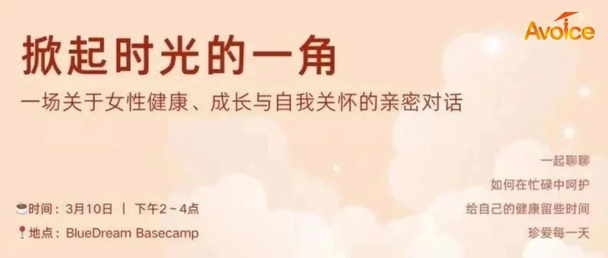
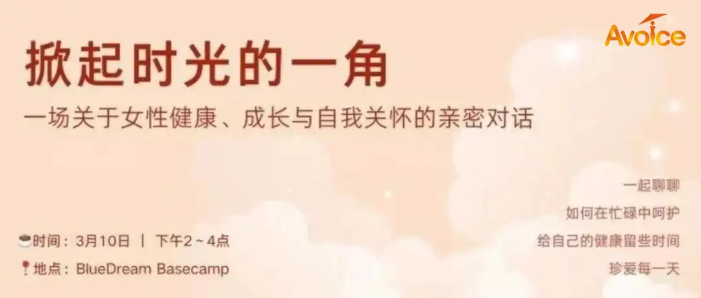
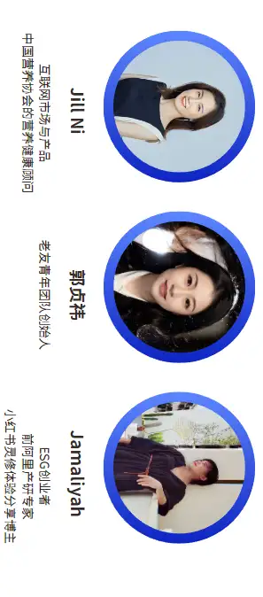
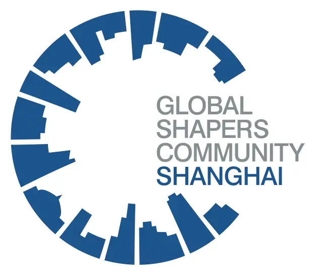
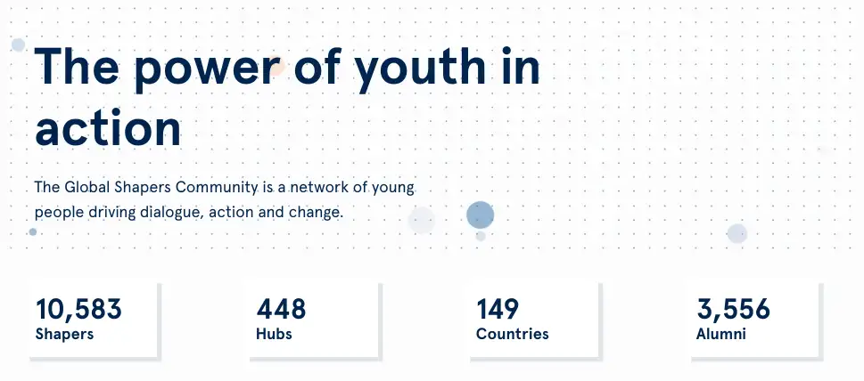
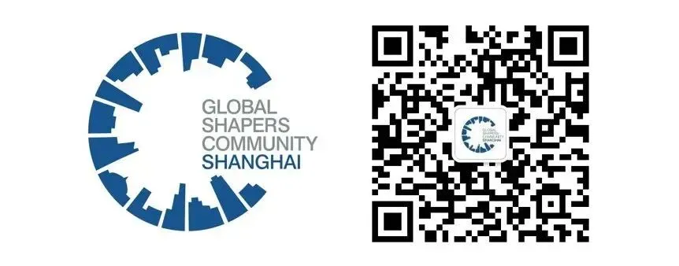

在匆忙的时光流转中我们步履匆匆，往往忽视了能让我们走的更远的能量——我们自己的健康与内心的成长。3月10日，诚邀您参与一场专为轻熟女性设计的亲密茶话会，带您一同揭开时光的秘密，探讨女性健康与成长的话题。
活动简介
Global Shapers Community Shanghai I Hub
在这个午后，我们不谈工作，不谈琐碎，只谈我们作为女性最关心的事——健康与成长。这是一个开放的平台，无论你是在寻找减压的方法，还是渴望与同行者共同探讨内心的成长与挑战，这里都是你的避风港。我们将有专业妇科医生与医疗从业者加入，为您解答女性激素与健康的疑问。
活动安排
Global Shapers Community Shanghai I Hub
Part 1: 我们聊聊吧
非常荣幸地邀请到了3位在女性健康和成长领域有自己独到见解的嘉宾，在人生的不同阶段，有着自己的焦虑，但同样写着自己的故事。而她们的故事只是活动的一半，期待到场的您用自己的故事完成另一半。

Part 2: 我们听听吧
我们邀请了湘雅的妇科主任与一家做激素居家监测创业公司的医学经理来给大家做更加专业的女性激素健康科普。给自己一点时间，也许可以对自己的身体多一分理解。同时我们会给到2～3个名额去做现场的激素检测的体验。
时间地点
Global Shapers Community Shanghai I Hub
🗓 日期：2024年3月10日 14:00-16:00
📍 地点：BottleDream Basecamp
扫描二维码报名
Global Shapers Community Shanghai I Hub
报名注意事项：
* 请在报名链接中详细填写您的信息，以便我们更好地了解您的需求和期望。
* 报名后记得加入我们的微信群，我们将告知具体的活动地址，并分享活动后续有关信息。
*若您有任何疑问，欢迎通过微信添加项目负责人 Luming (@luminous4ever）了解更多活动有关信息。
最后的话
Global Shapers Community Shanghai I Hub
我们相信，每个女性都是独一无二的存在。您的故事，您的智慧，您的经历，都值得被倾听和分享。期待您的加入，与您共同开启一段关于健康与成长的新旅程。

世界经济论坛·全球杰出青年上海 I 社区
Global Shapers Community Shanghai I Hub

想要了解更多？
了解全球杰出青年社区的更多信息，敬请登录：
www.globalshapers.org
通过Facebook关注全球杰出青年，敬请登录：
www.facebook.com/gobalshapers
通过Twitter关注全球杰出青年，敬请登录：
www.twitter.com/globalshapers
阅读全球杰出青年在世界经济论坛博客网站上撰写的博文，
敬请登录：
http://wef.ch/blog
创造你的未来，一起改变世界！
世界经济论坛·全球杰出青年上海I社区
Global Shapers Community Shanghai I Hub
全球杰出青年社区是世界经济论坛直属的全球性青年社区，2011年由克劳斯·施瓦布教授创办，旨在为年轻人提供了一个创造未来的全球性平台。
上海I社区由各行各业的年轻人组成，在实现个人发展的同时，致力于通过推动社区发展来增加更多重塑社会的可能性，我们认为青年人应该是“推动变革的积极力量，而不是消极的看客”。通过社区的平台促进社区成员更好、更快的发展，同时，社区通过各种社会项目的实施来提升社区本身和社区成员的社会贡献和影响力。
